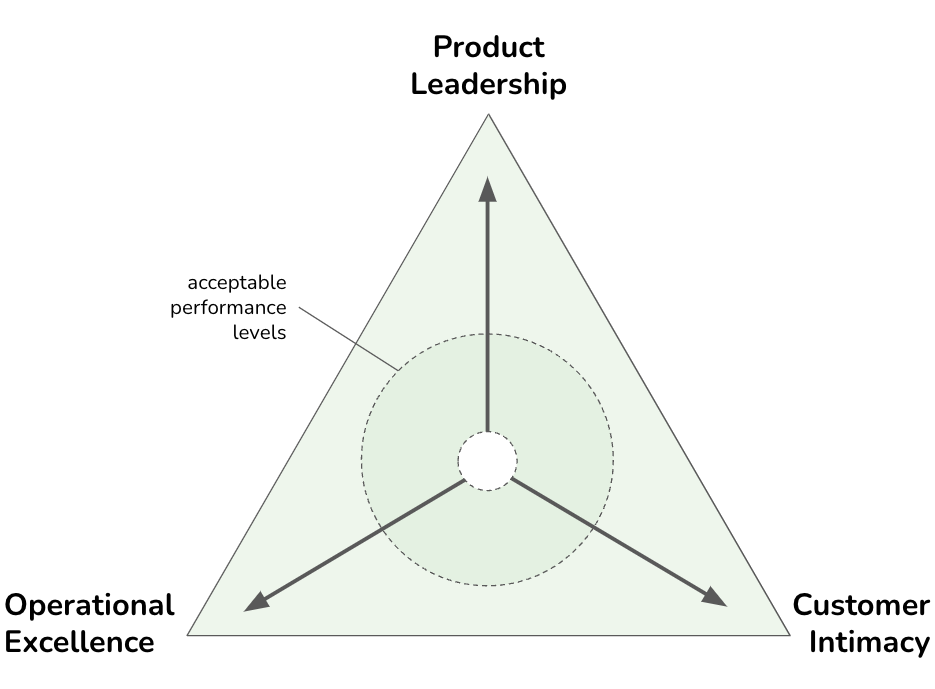

Product-Led Organizations
IN THIS SECTION, YOU WILL: Understand the importance of architecture in helping companies become successful product-led organizations, focusing strongly on their customers’ actual needs and preferences.
KEY POINTS:
- When it comes to product development, I generally recommend two resources for architects: “Escaping the Build Trap: How Effective Product Management Creates Real Value” by Melissa Perri and “The Discipline of Market Leader” by Michael Treacy and Fred Wiersema.
- The build trap occurs when businesses focus too much on their product’s features and functionalities, overlooking customers’ needs and preferences.
- The Discipline of Market Leader highlights three strategic paths a company can use to achieve market leadership: operational excellence, product leadership, and customer intimacy.
Product-led organizations focus on building and delivering products that deliver value. Product development is the discipline of creating and bringing new products or services to the market. Having a strong product development system is essential for modern organizations to thrive in a competitive, fast-paced, and ever-changing business landscape. It can drive growth, satisfy customer demands, enhance operational efficiency, and build a sustainable brand.
Understanding product development is essential for architects. Product development involves the journey from the conception of an idea to the product’s final development, marketing, and distribution. Product development encompasses various activities and stages to transform an initial concept into a tangible and market-ready offering, and architects should be involved in these activities.
When it comes to understanding product development, I generally recommend two resources for architects:
- “Escaping the Build Trap: How Effective Product Management Creates Real Value” by Melissa Perri, and
- “The Discipline of Market Leader” by Michael Treacy and Fred Wiersema.
Both of these sources provide several things for architects:
- Increase their awareness about how good or bad product development looks like,
- Provide them with tools to support or challenge product decisions, and
- Prepare them for designing the organization’s systems that suit diverse product strategies.
- Enable them to collaborate effectively with product teams (product managers, product operations).
The Build Trap
The Escaping the Build Trap book is a guide intended to help organizations shift their focus from simply building and shipping products to creating value for their customers. The “build trap” refers to the common pitfall where companies become fixated on building more features and products without considering whether they meet customer needs or generate desired outcomes.
Perri explores the reasons behind the build trap and provides practical strategies to help businesses escape it by adopting a value-centric, customer-focused approach. The main message is that by understanding customer needs, adopting a customer-centric approach, and embracing innovation and agility, companies can increase their chances of developing successful products that stand out in the market.
In addition to numerous insights for architects, the book provides the following valuable tips necessary for architects’ good interaction with product development:
- Know how a good product development process looks like
- Recognizing bad product-development approaches
- Identifying bad product manager archetypes
How a Good Product Development Approach Looks Like
Product-led companies understand that the success of their products is the primary driver of growth and value for their company. They prioritize, organize, and strategize around product success.
Critical elements of successful product-led companies include:
-
Understanding Customer Needs: Successful companies understand customer needs, desires, and expectations to develop successful products. Businesses can gain valuable insights and tailor their products by conducting thorough market research and engaging with customers.
-
Adopting a Customer-Centric Approach: Organizations need to adopt a customer-centric approach to product development to avoid the build trap. This approach means prioritizing customer satisfaction and incorporating their feedback throughout the entire product development process.
-
Executing Iterative Product Development: Iterative product development is essential, continuously testing and refining the product based on customer feedback. An iterative process helps businesses identify and address potential issues before they become significant problems.
-
Aligning Business Goals with Customer Needs: Businesses should align their goals and objectives with the needs of their customers. Doing so can ensure their products deliver value and create a robust and loyal customer base.
-
Embracing Innovation and Agility: Businesses must be innovative and agile to adapt to rapidly changing customer preferences and market conditions. This adaptivity includes staying informed about the latest trends, technologies, and best practices in product development.
-
Measuring Success: Accurately measuring a product’s success is essential. Such measuring involves tracking key performance indicators (KPIs) and using data-driven insights to make informed product improvements and enhancements decisions (Figure 1).
Architects should be familiar with these characteristics, helping their product leads to operate an effective product development.
Figure 1: Some of the typical product metrics.
Bad Product Companies Archetypes
The build trap occurs when businesses focus too much on their product’s features and functionalities, overlooking customers’ needs and preferences. Value, from a business perspective, is pretty straightforward. It can fuel your business: money, data, knowledge capital, or promotion. Every feature you build, and any initiative you take as a company should result in some outcome that is tied back to that business value.
Many companies are, instead, led by sales, visionaries, or technology. All of these ways of organizing can land you in the build trap.
- Sales-led companies let their contracts define their product strategy. The product roadmap and direction were driven by what was promised to customers without aligning with the overall strategy.
- Visionary-led companies can be compelling — when you have the right visionary. Also, when that visionary leaves, the product direction usually crumbles. Operating as a visionary-led company is not sustainable.
- The technology-led companies are driven by the latest and coolest technology. The problem is that they often lack a market-facing, value-led strategy.
Architects should be able to recognize and frequently challenge organizations with these archetypes.
Bad Product Manager Archetypes
Architects will frequently need to collaborate closely with product managers. The fundamental role of the product manager in the organization is to work with a team to create the right product that balances meeting business needs with solving user problems. Product managers connect the dots. They take input from customer research, expert information, market research, business direction, experiment results, and data analysis.
To better understand the role of a product manager, it is helpful to understand three bad product manager archetypes:
- The Mini-CEO,
- The Former Project Manager, and
- The Waiter.
The Mini-CEO
Product managers are not the mini-CEOs of a product, yet, according to Melissa Perry, most job postings for product managers describe them as the mini-CEO.
CEOs have sole authority over many things. Product managers can’t change many things a CEO can do in an organization. They especially don’t have power over people because they are not people managers at the team level.
Instead, they must influence them to move in a specific direction. Out of this CEO myth emerged an archetype of a very arrogant product manager who thinks they rule the world.
The Former Project Manager
Product managers are not project managers, although some project management is needed to execute the role correctly.
Project managers are responsible for the when. When will a project finish? Is everyone on track? Will we hit our deadline?
Product managers are responsible for the why. Why are we building this? How does it deliver value to our customers? How does it help meet the goals of the business? The latter questions are more challenging to answer than the former, and product managers who don’t understand their roles often resort to doing that type of work.
Many companies still think the project manager and product manager are the same.
The Waiter
The waiter is a product manager who, at heart, is an order taker. They go to their stakeholders, customers, or managers, ask for what they want, and turn those desires into a list of items to be developed. There is no goal, vision, or decision-making involved. More often than not, the most important person gets their features prioritized.
Instead of discovering problems, waiters ask, “What do you want?” The customer asks for a specific solution, which these product managers implement.
The waiter approach leads to what David J. Bland is calling the Product Death Cycle:
- No one uses our product,
- Ask customers what features are missing,
- Build the missing features (which no one uses, starting the cycle again).
The Discipline of Market Leader
Another tool I found helpful in my work as an architect is The Discipline of Market Leader, a concept developed by Michael Treacy and Fred Wiersema. The Discipline of Market Leader highlights a company’s three strategic paths to achieve market leadership: operational excellence, product leadership, and customer intimacy (Figure 2).
 Figure 2: The Discipline of Market Leader model postulates that any successful business needs to maintain at least “acceptable” levels of performance in each of the three dimensions (operational excellence, product leadership, and customer intimacy) but would need to choose one of them to become a market leader in its field.
Product Leadership companies provide leading-edge products or useful new applications of existing products or services. Their core process includes invention, commercialization, market exploitation, and disjoint work procedures. Exemplars are Apple, Tesla, Nike, Rolex, and Harley-Davidson.
Operational Excellence companies provide reliable products and services at competitive prices, delivered with minimal difficulty or inconvenience. Their value proposition is guaranteed low price and hassle-free service. Which also includes time spent to purchase, future product maintenance, and ease of getting swift and dependable service. The core processes include product delivery, basic service cycle + build on standards, no frills fixed assets. Exemplars are IKEA, McDonald’s, Starbucks, Walmart, and Southwest Airlines.
Customer Intimacy companies do not deliver what the market wants but what a specific customer wants. Creating results for carefully selected and nurtured clients. Continually tailors products/services to customers to offer the ‘best total solution.’ Exemplars are Salesforce, LMS Providers, HomeDepot.
The model postulates that any successful business needs to maintain at least “acceptable” performance levels in each of the three dimensions but would need to choose one of them to become a market leader in its field. The model suggests that if you genuinely want to excel in any of the three disciplines, you must make sacrifices in the other two as these become mutually exclusive. By focusing on one (and one only) value to excel at, they beat competitors by dividing their attention and resources among more than one discipline. Each value discipline demands a different operating model to capture the value best. And customers know that to expect superior value in every dimension is unreasonable. You don’t go to Walmart for the best personalized service, or buy Nike sneakers because of low prices.
I found the model helpful in two ways:
- To challenge plans and strategies that are too ambitious, e.g., wanting to excel in all three directions: operational excellence, product leadership, and customer intimacy. It is very complex and expensive to try to build a scalable solution accessible by many users and from many countries while addressing the particular needs of one local customer while doing significant work to innovate around the latest technology hype.
- To prepare for architecting the company’s IT landscape, as different directions require different approaches.
Each direction represents a unique value proposition and requires specific architectural considerations to support it effectively.
- Operational Excellence: This path focuses on delivering products or services at the lowest cost and highest efficiency. The IT architecture should streamline processes, automate repetitive tasks, and optimize resource allocation. It involves leveraging technologies like enterprise resource planning (ERP) systems, supply chain management tools, and process automation solutions to achieve operational efficiency. Scalability, reliability, and cost-effectiveness are critical factors in architectural design.
- Product Leadership: This path involves developing and delivering innovative and superior products or services that differentiate an organization from its competitors. The IT architecture should prioritize flexibility, agility, and the ability to support rapid innovation. Architecture typically emphasizes integrating product development and research systems, data analytics capabilities, and collaboration tools to facilitate idea generation, prototyping, and testing. Ensure that the architecture enables seamless integration with external partners and suppliers to foster a culture of innovation and continuous improvement.
- Customer Intimacy: This path focuses on building strong customer relationships and delivering personalized experiences. The IT architecture should enable customer data collection, analysis, and utilization to gain insights and provide customized solutions. Architectural considerations frequently include complex customer relationship management (CRM) systems, data analytics platforms, and customer engagement tools. Integration with various touchpoints, such as web portals, mobile applications, and social media channels, is essential to deliver a seamless and personalized customer experience.
Incorporating the Discipline of Market Leader into IT architecture design requires aligning technology choices and design decisions with the chosen strategic path. Additionally, the architecture should be flexible enough to adapt to evolving market dynamics and business needs, allowing the organization to switch or combine strategic routes if required.
It is important to remember that the Discipline of Market Leader is not a one-size-fits-all approach, and organizations may need to balance elements from multiple paths based on their specific business context and market conditions.
Product Operations
Another product concept relevant to architectural practice is Product Operations. Melissa Perri and Denise Tilles provide an excellent overview of Product Operations in their book. Perri and Tilles define Product Operations as the discipline of helping your product management function scale well, surrounding teams with all of the essential inputs to set strategy, prioritize, and streamline ways of working.

Perri and Tilles define Product Operations structure as consisting of three pillars:
-
Business Data and Insights: This pillar focuses on the internal collection and analysis of data to create and monitor strategies. It helps leaders track progress regarding outcomes, reconciling research and development (R&D) spending with return on investment (ROI). It also integrates business metrics such as annual recurring revenue (ARR) and retention rates with product metrics, aiding strategic decisions for leaders and product managers.
-
Customer and Market Insights: Unlike the first pillar, which deals with internal data, this one aggregates and facilitates research received externally. It includes streamlining insights from customers and users and making them readily accessible for team exploration. Additionally, it provides tools for market research, such as competitor analysis and calculations of total addressable market/serviceable addressable market (TAM/SAM) for potential product ideas.
-
Process and Practices: This pillar enhances the value of product management through consistent cross-functional practices and frameworks. It defines the company’s product operating model, outlining how strategy is created and deployed, how cross-functional teams collaborate, and how the product management team functions. This area also includes product governance and tool management.
Product Operations has risen as an approach to supporting product and development teams when they need more structured systems for managing workflows and communications, avoiding chaos, wasted efforts, interdepartmental tensions, and creating products that fail to meet market needs.
Discovery and Ideation Processes
Product Operations can play an essential role in defining robust discovery and ideation processes in product development to ensure that products meet actual market needs. Frequently, products are developed based on assumptions without sufficient market research or user validation. The lack of such processes can lead to products that do not resonate with users and are misaligned with customer expectations.
Product Operations aim to facilitate deep discovery work through structured research sprints involving surveys, interviews, and direct interactions with user environments. These efforts help identify key pain points and opportunities for innovation. Following the discovery phase, ideation workshops allow for the generation of potential features evaluated based on criteria like customer value, feasibility, and alignment with the product vision.
Product Operations frequently work on implementing a priority matrix and revamping the product roadmap to ensure that the organization directs engineering efforts toward the most validated and impactful opportunities.
Product Operations also formalize continuous learning and feedback mechanisms to maintain alignment with evolving customer needs and market dynamics.
Aligned Data-Driven Planning Processes
Product Operations typically facilitate the alignment of organizational goals with team autonomy by introducing regular strategic planning sessions, such as quarterly roadmap summits. These summits involve key stakeholders and aim to balance discovery insights with available engineering resources, operational support, and market needs. Features are evaluated and prioritized based on customer value, development cost, and overall coherence with the platform strategy.
An essential component of this approach is the continuous collection and analysis of user feedback, alongside regular review of usage metrics. This data-driven strategy allows teams to adapt quickly if features do not meet performance expectations or user satisfaction, thus continually refining the product-market fit.
User and Market Feedback Loops
Product Operations can also help organizations is in maintaining and enhancing product-market fit through continuous optimization cycles post-market release.
A key component of continuous optimization is the establishment of robust feedback loops. These loops, involving surveys, interviews, and direct observation, are essential for staying in tune with evolving customer needs and pain points. Product Operations should also ensure that there are reliable systems in place for showcasing functionality still under development, allowing for user input well before final releases.
Overall, by stewarding communication, documentation, and insights across teams and stakeholders, Product Operations can foster a culture of continuous learning and adaptation. Such an approach helps avoid insular planning and aligns product development more closely with actual user needs and market dynamics, reducing waste and ensuring that investments are validated before being fully committed.
Product Operations and Architecture Practice
In many ways, the concept of Product Operations resonates with my view of architectural practice. The main difference is that Product Operations maintain a closer relationship with customers, designers, and researchers, bringing end-user perspective much more prominently into focus.
In organizations with Product Operations teams, architecture practice can create powerful synergic relationships. Like architecture practice, Product Operations aim to maintain efficiency and cohesion across departments. Product Operations function like an orchestra conductor by effectively managing critical data, activities, and communications, ensuring that each team contributes optimally to a unified vision.
In my experience, Product Operations can make architecture practice more effective by providing additional insights and data and making it easier for architects to be present at critical moments and interact with key stakeholders. Architecture practice can help Product Operations with complementary insights, data, and stakeholder connections.
Questions to Consider
- Have you ever found yourself or your organization falling into the “build trap”? What were the signs?
- Reflecting on your organization, would you say it’s sales-led, visionary-led, or technology-led?
- Can you identify instances where a product manager has acted like a “Mini-CEO,” “Waiter,” or a “Former Project Manager”? What were the consequences?
- How does your organization currently understand and incorporate customer needs? Could there be improvements in this area?
- How does your company approach iterative product development?
- Are your business goals aligned with customer needs? How do you maintain this alignment as business goals and customer needs evolve?
- How innovative and agile do you consider your organization to be? What areas need more flexibility or creativity?
- What metrics does your organization use to measure product success?
- Which of the three strategic paths (operational excellence, product leadership, and customer intimacy) does your company or project currently emphasize most? Why?
- Can you identify areas where your company or project may be trying to excel in all three disciplines, potentially causing complexity or inefficiency?
- How does your IT architecture support your company’s strategic path? Are there areas where it could better align?
- How can incorporating the Discipline of Market Leader into your IT architecture design influence your technology choices and design decisions?
On Execution and Governance ← On Execution and Governance: Introduction |
On Execution and Governance Governance: Nudge, Taxation, Mandates → |